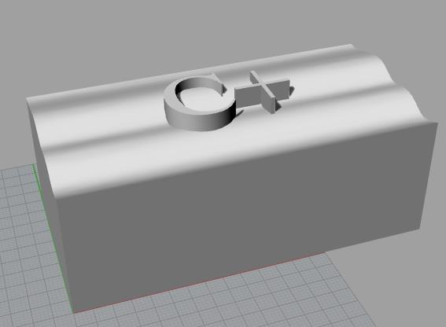
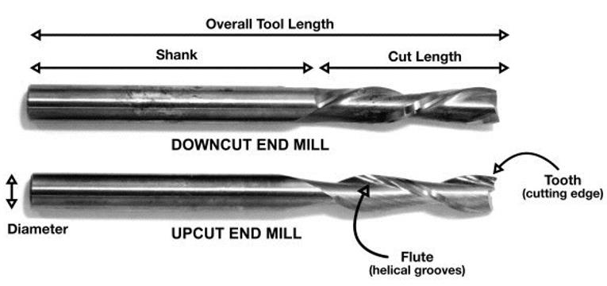
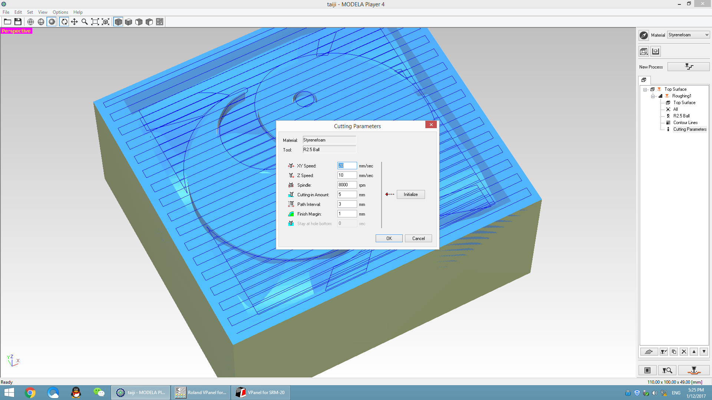
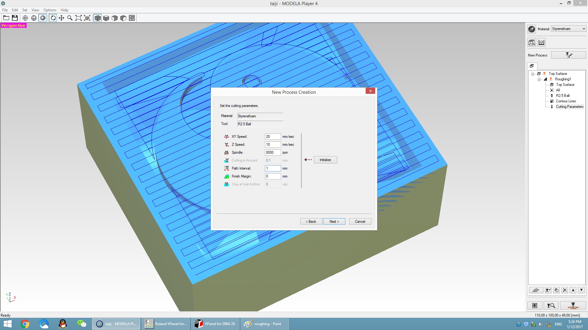
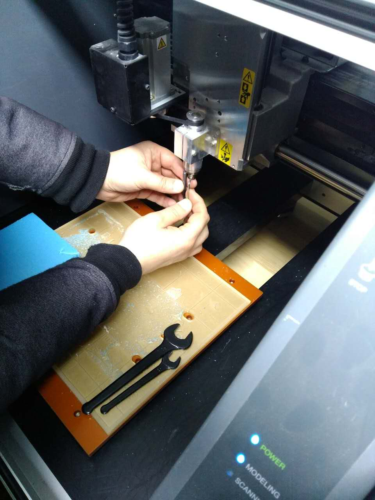
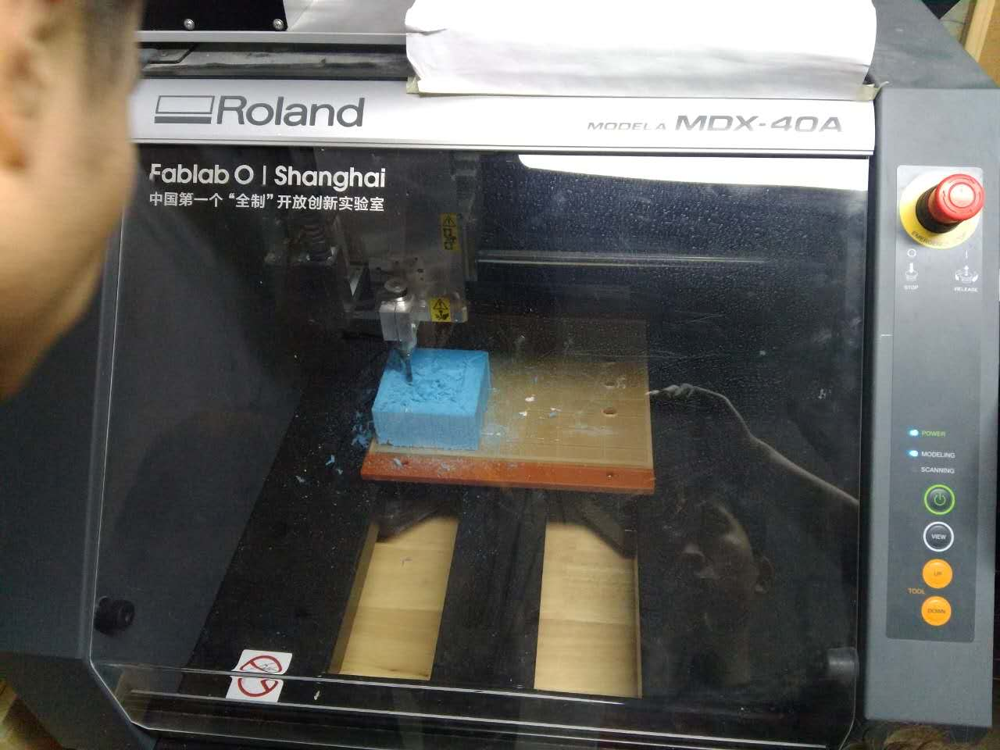
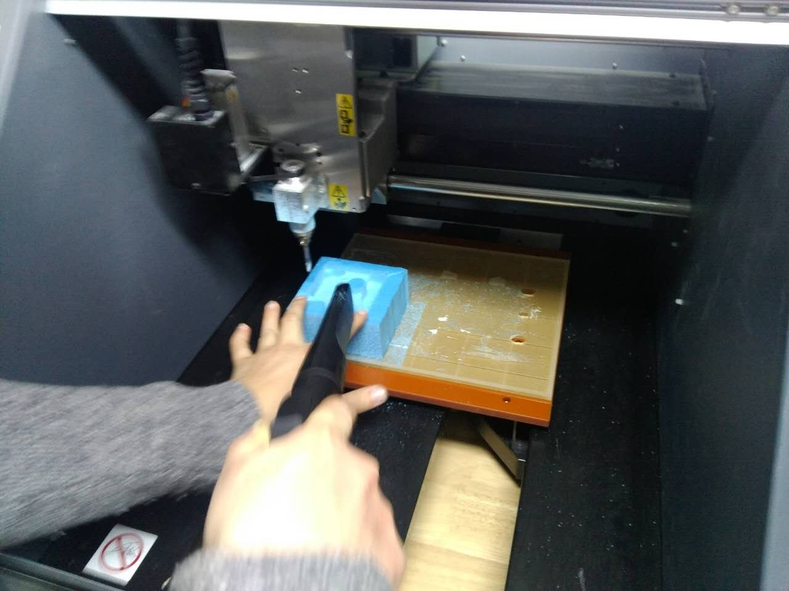
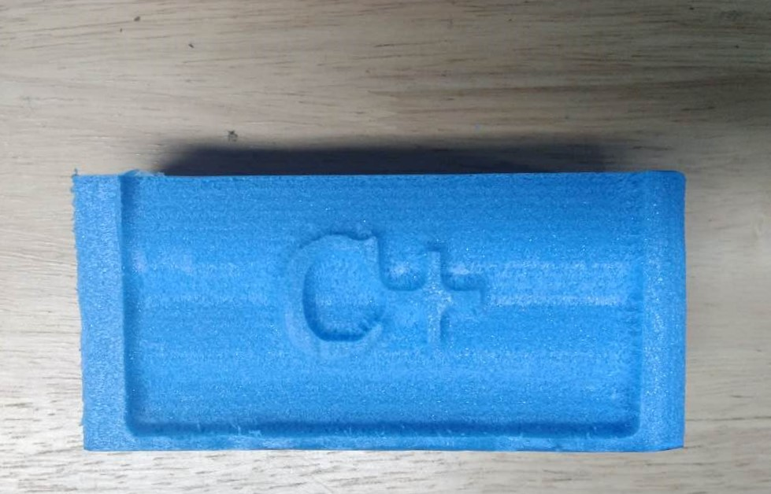

CNC is ubtractive manufacturing removing material.It can make molds,mill out the part itself,circuit boards and so on.We have Learned the fundamentals of milling using the Roland milling machine to creat 3 dimensional parts.Designing a 3Dmodel,generating toolpaths and milling a finished object or mold of the model. Softwares:Rhinoceros,Modela Player4,Roland VPanel for MDX-40A Device:Roland MDX-40A
You may be able to design a 3D model.However, the models used for CNC processing are special.The negative angle can not be set since the milling cutter can only come from the top, and it can not have a fine gully because of the tools is a certain diameter, it's unable to be processed if the ravine is less than the diameter. So I made a smooth surface and write "C+" on the model.It would be saved as STL.

Bbefore we generate tool path,we must understand the main parameters of the equipment.
Feeds and Speeds:The speed at which we move a cutter across the material is called the “feed rate”. The rate of rotation is called the “speed” and is controlled by how fast the router or spindle turns the cutting tool.
Chip load: is the thickness of a machined chip as cut by a specific tool type. More flutes create a smoother surface finish, while fewer flutes remove material fastest, but make rougher cuts. ~ 0.001-0.010" = feed rate (inches per minute) / (RPM x number of flutes).
Cut depth: How deep the tool cuts in to the material (Vertically) Rule of thumb is to use tool diameter.
Step-over: How much will the tool overlap from previous path. Rule of thumb is tool diameter/2.
Kerf, the tool has a thickness the amount of material being removed is called kerf.
Rough/finish cuts: for removing material fast we start with a rough cut with a bigger tool. After that we run a finishing job smoothing the surface.
T-bones:Since the end mill is round you can't have sharp inner corners.In a pocket one way of solving this is to make t-bones,another solution is to drill holes in each corner.
Tabs:tabs are aded to hold the piece in place while cutting.
lead-in, -out: Instead of just plunging the tool down and start cutting. The tools comes down on a slope.
Test cuts, cutting air: run the job with the z axis offset to see everything works as it should.

I put the 3D model to the Modela Player4,we can click "rendering" to render the model,set the height,scale,and select the above removal of the model in "set>model",and then move the origin to the edge from the center in "origin". Set new process:I chose the roughing,and selected the right tool(I used a ball milling cutter with a diameter of 5mm ),select all or partial to be milled,and then set different milling parameters according to material.Rigid foam insolation set like this:

Next,you can finish you set and preview. Set another new process:I chose the finishing,and set like roughing,parameters of milling should be changed:
Finally,local preservation.Roland VPanel for MDX-40A is a software to control the CNC.First we need to open the Roland MDX-40A to open the VPanel,move the platform to the observation window, and use the double-sided adhesive tape to fix the foam on the platform.Install tool and step up.

Then move the tool to machine zero,we can set the user zero now.We must to delete all the files in the machine,and add our file to the VPanel,then click the output to start milling.
We need to clean the milling waste when it works over.And then,we can add the finishing file.
When it's over,it wouuld be like this.But there is a problem that it's too slose between "c" and "+", less than 5mm(tool's diameter),so they were still connected.
It's the 3D model.
You can downloaded the file:
Please click here.